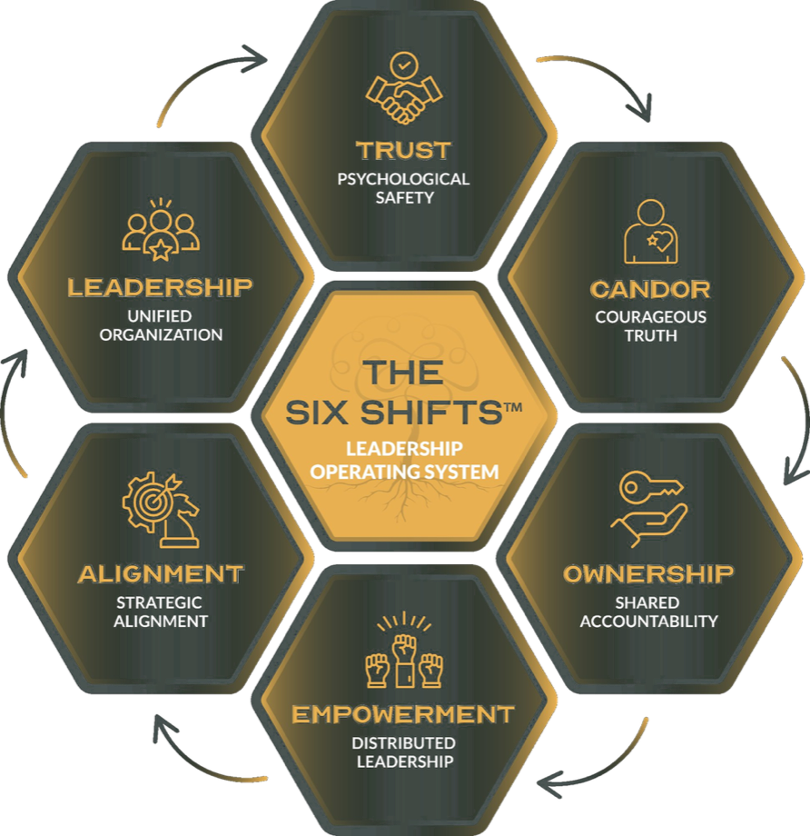
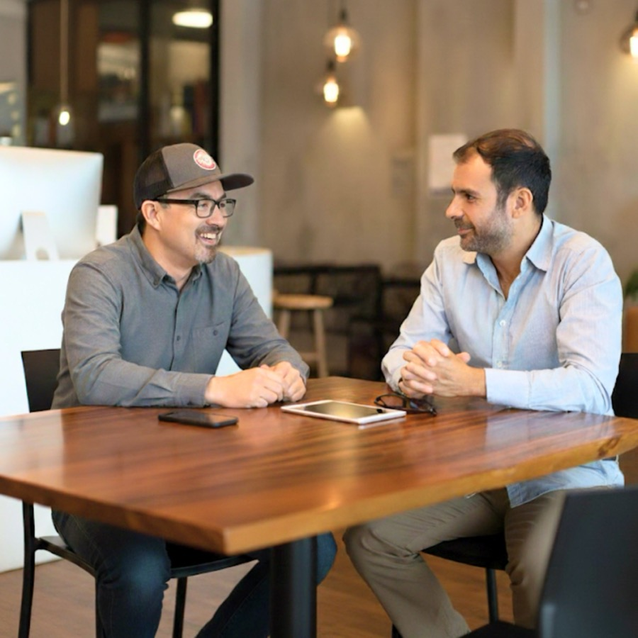

Most leaders come to us in one of two situations: the team isn't working and they know it, or they personally feel stuck and need someone in their corner. Often both.
They're talented individually, but in the room together the real conversations don't happen, accountability is uneven, and decisions get made and then quietly unmade. The CEO ends up carrying everything because nobody else steps up the same way — and that's not a people problem, it's a team problem.
We work with the CEO and their leadership team together to reset how they communicate, make decisions, and hold each other accountable. The foundation is The Six Shifts™, our proprietary leadership operating system — and that's where it makes sense to start.
This is an ongoing engagement, typically a year or more, that changes how the team operates in every meeting, every decision, every day.

Maybe you're a CEO who knows they're the bottleneck but can't figure out how to let go. Maybe you're a leader who keeps hitting the same ceiling and the books and podcasts aren't cutting it anymore.
This is direct, structured coaching tied to real business outcomes. We work on the patterns you can't see in yourself — the motivations, the fears, the default reactions that drive every decision you make. When those shift, everything shifts: how you lead, how your team responds, how the business performs.
Engagements are typically a year or more. We meet regularly, and the work happens between sessions as much as during them.

That's not a facilitation problem — it's a design problem. Most offsites are built to feel good in the room, not to change anything after it. We build sessions around the actual work your team needs to do: the conversations you've been avoiding, the alignment gaps that keep showing up, the trust issues nobody wants to name out loud.
Every keynote and offsite we run is built from scratch for your team, your context, and the specific challenge you're trying to solve. We don't recycle slide decks or deliver generic content that could apply to any room. If you're bringing your leadership team together, they should leave different than they arrived.
You tell me what's going on. I'll be honest about whether I can help and what I'd recommend. No pitch, no proposal, no pressure to decide anything on the spot. Just a straightforward conversation between two people figuring out if there's a fit.
Book a 30-Minute Call →